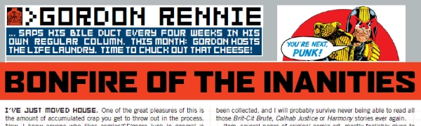

An article series in which Gordon Rennie lets loose on some pet hates about the comics industry (like other writers and people who collect comics).
| Sector Control | |||||||||
| Title | Parts | Pages | w indicates a wraparound coverCovers | Year(s) | Issues | Writer | Artist | Colourist | Letterer |
|---|---|---|---|---|---|---|---|---|---|
| Eat the Rich! | 1 | 0.5 | 0 | 2003 | M203 | Gordon Rennie | reprints | <-- | n/a |
| Smell the Coffee! | 1 | 0.5 | 0 | 2003 | M204 | Gordon Rennie | reprints | <-- | n/a |
| Office Gossip | 1 | 0.5 | 0 | 2003 | M205 | Gordon Rennie | reprints | <-- | n/a |
| A Question of Sport | 1 | 0.5 | 0 | 2003 | M206 | Gordon Rennie | reprints | <-- | n/a |
| Junketing With Dinosaurs | 1 | 0.5 | 0 | 2003 | M207 | Gordon Rennie | reprints | <-- | n/a |
| I'm With This Idiot... | 1 | 0.5 | 0 | 2003 | M209 | Gordon Rennie | reprints | <-- | n/a |
| Bonfire of the Inanities | 1 | 0.5 | 0 | 2003 | M210 | Gordon Rennie | reprints | <-- | n/a |
| Tie-In Fighter | 1 | 0.5 | 0 | 2003 | M212 | Gordon Rennie | reprints | <-- | n/a |
| It'sh Jedge Drudd (hic!) | 1 | 0.5 | 0 | 2003 | M213 | Gordon Rennie | reprints | <-- | n/a |
| Things to Come ... Probably | 1 | 2 | 0 | 2003 | M214 | Gordon Rennie | reprints | <-- | n/a |
| 2000 AC/DC | 1 | 0.5 | 0 | 2004 | M215 | Gordon Rennie | reprints | <-- | n/a |
| Shoplifters of the World Unite! | 1 | 0.5 | 0 | 2004 | M217 | Gordon Rennie | reprints | <-- | n/a |
| You're Next... | |||||||||
| Title | Parts | Pages | w indicates a wraparound coverCovers | Year(s) | Issues | Writer | Artist | Colourist | Letterer |
| High on Thrill-Power | 1 | 1 | 0 | 2004 | M218 | Gordon Rennie | reprints | <-- | n/a |
| No Sex Please, We're Squaxx Dek Thargo | 1 | 1 | 0 | 2004 | M219 | Gordon Rennie | reprints | <-- | n/a |
| The God Squad | 1 | 1 | 0 | 2004 | M220 | Gordon Rennie | reprints | <-- | n/a |
| Never Mind the Ballots | 1 | 1 | 0 | 2004 | M221 | Gordon Rennie | reprints | <-- | n/a |
| Heatseekers | |||||||||
| Title | Parts | Pages | w indicates a wraparound coverCovers | Year(s) | Issues | Writer | Artist | Colourist | Letterer |
| The Name Game | 1 | 1 | 0 | 2004 | M224 | Gordon Rennie | reprints | <-- | n/a |
| The Glorious Dead | 1 | 1 | 0 | 2004 | M225 | Gordon Rennie | reprints | <-- | n/a |
| Bloody Artists | 1 | 1 | 0 | 2004 | M226 | Gordon Rennie | reprints | <-- | n/a |
| Bloody Editors | 1 | 1 | 0 | 2004 | M227 | Gordon Rennie | reprints | <-- | n/a |
| Bloody Foreigners | 1 | 1 | 0 | 2005 | M228 | Gordon Rennie | reprints | <-- | n/a |
| Bishop: Bloody Writers | 1 | 1 | 0 | 2005 | M229 | David Bishop | reprints | <-- | n/a |
| That Joke Isn't Funny Anymore | 1 | 2 | 0 | 2005 | M230 | Gordon Rennie | reprints | <-- | n/a |
| year | episodes | pages |
| 1994 | 0 | 0 |
| 1995 | 0 | 0 |
| 1996 | 0 | 0 |
| 1997 | 0 | 0 |
| 1998 | 0 | 0 |
| 1999 | 0 | 0 |
| 2000 | 0 | 0 |
| 2001 | 0 | 0 |
| 2002 | 0 | 0 |
| 2003 | 10 | 6.5 |
| 2004 | 10 | 9 |
| 2005 | 3 | 4 |
| 2006 | 0 | 0 |
| 2007 | 0 | 0 |
| 2008 | 0 | 0 |
| 2009 | 0 | 0 |
| 2010 | 0 | 0 |
| 2011 | 0 | 0 |
| 2012 | 0 | 0 |
| 2013 | 0 | 0 |
| 2014 | 0 | 0 |